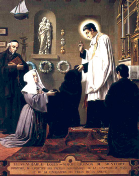
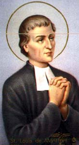
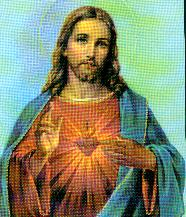
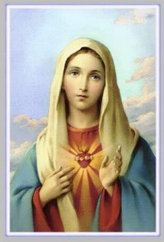
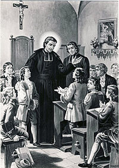
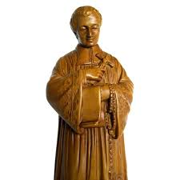

SUAS OBRAS
Os livros que ele escreveu são
poucos e pequenos, mas revela, sobretudo, algo de sobrenatural, a grandeza de
uma alma amorosa de um grande apóstolo
do SENHOR.
E esta realidade ficou impressa e gravada nos seus livros. DEUS quis que ele
continuasse com sua pregação apaixonada, mesmo após a morte, deixando os seus
conhecimentos ao alcance de todos os corações, dando continuidade ao seu fervoroso
apostolado em benefício ao culto da MÃE DE JESUS e com divulgação dos ensinamentos
Divinos.
Ele concretizou este objetivo
em duas frentes de trabalho: através dos livros que escreveu e das Congregações
Religiosas que fundou: a dos Padres da Companhia de MARIA e a Congregação das Filhas
da Sabedoria, sobre as quais já comentamos em capítulo anterior.
Ele escreveu:
“O Tratado da
Verdadeira Devoção a SANTÍSSIMA VIRGEM MARIA”
e o seu resumo intitulado
“O Segredo de MARIA” que são
conhecidos no mundo inteiro.
São menos conhecidos,
mas também, não menos belos e preciosos, os dois opúsculos:
“O Segredo
Admirável do Santo Rosário”. Para converter
e salvar as almas. Brochura de 200 páginas. Edição francesa de Alfredo Mame. Tours
– França. Que é a doutrina sobre a excelência do Rosário.
“Carta circular
aos Amigos da Cruz”. Pequena brochura de 52 páginas.
Edição francesa de H. Oudin – Paris. Carta dirigida aos membros da Irmandade, estimulando
o espírito de sacrifício.
Além destes opúsculos, o São
Luís de Montfort também escreveu grande número de cânticos
espirituais, bonitos, instrutivos e piedosos, que foram reunidos num único volume.
Mais tarde, os seus filhos espirituais
fundaram duas associações religiosas, com o objetivo de estimular a prática da Santa
Escravidão:
A Associação dos Sacerdotes de
Maria, com sua interessante “Revista
dos Sacerdotes de Maria” (Revue des Prêtres de Marie);
e a "Associação de Maria, Rainha dos
corações", também com valiosa revista para seculares.
Ambas as revistas, de avultada
tiragem, servem como laço, que une os vários centros da Santa Escravidão.
"Só
DEUS" era o lema de São Luís Maria Grignion de Montfort
e repetiu mais de 150 vezes esta afirmação em seus escritos. "Só DEUS"
é também o título de seus escritos coletados. Resumidamente falando, com base em
seus escritos, a espiritualidade Montfortiana pode ser resumida através da
fórmula: "Para DEUS, pela
Sabedoria de CRISTO, no ESPÍRITO, em comunhão com MARIA, para o Reino de DEUS."
Embora São Luís de
Montfort seja mais conhecido pela sua devoção à SANTÍSSIMA VIRGEM MARIA, sua
espiritualidade é fundada sobre o mistério da Encarnação de JESUS CRISTO, e
portanto, está centrada em CRISTO.
São Luís Maria
Grignion de Montfort evidenciou a
"consagração total a JESUS CRISTO, a Sabedoria Encarnada, pelas mãos de MARIA"
, que teve um forte impacto sobre a Mariologia Católica,
tanto na piedade popular, quanto na espiritualidade do povo e das ordens religiosas. Sendo
um dos autores clássicos da espiritualidade cristã, São Luís de Montfort é um justo
candidato a se tornar um doutor da Igreja. O seu livro "Tratado da Verdadeira Devoção à Santíssima Virgem Maria
" tem sido considerado um dos mais influentes
livros marianos.

Também, ele acreditava
com absoluta segurança no poder do Rosário e o seu popular livro
"O Segredo do Rosário"
, de fácil leitura, foi aprovado e elogiado pela Igreja Católica,
por que fornece métodos específicos para se rezar o Rosário com maior Devoção. Foi lido por
católicos no mundo inteiro e há mais de dois séculos é uma das primeiras obras que estabelece
a moderna Mariologia.
Também é importante lembrar,
que São Luís Maria Grignion de Montfort, na sua obra "Tratado da Verdadeira Devoção à Santíssima Virgem
Maria", profetizou o surgimento
futuro daqueles que chamou de
"Apóstolos dos Últimos Tempos" e que foram
confirmados mais tarde, durante as aparições de NOSSA SENHORA DE LA SALETE.
Naquela Aparição a VIRGEM MARIA falou aos videntes:
“EU dirijo um
urgente apelo a Terra; chamo os verdadeiros discípulos do DEUS Vivo que reina
nos Céus; chamo os verdadeiros imitadores de CRISTO feito Homem, o único e
verdadeiro Salvador dos homens; chamo os MEUS filhos, os MEUS verdadeiros
devotos, aqueles que já se ME consagraram a fim de que EU vos conduza ao MEU
DIVINO FILHO; os que, por assim dizer, levo nos MEUS Braços, os que têm vivido
do MEU Espírito; finalmente, chamo os Apóstolos dos Últimos Tempos, os fiéis
discípulos de JESUS CRISTO que têm vivido no desprezo do mundo e de si próprios,
na pobreza e na humildade, no desprezo e no silêncio, na oração e na
mortificação, na castidade e na união com DEUS, no sofrimento e no
desconhecimento do mundo. Já é hora de que saiam e venham iluminar a Terra. Ide
e mostrai-vos como filhos queridos MEUS. EU estou convosco e em vós sempre que a
vossa fé seja a luz que alumie, e nesses dias de infortúnio, que o vosso zelo
vos faça famintos da glória de DEUS e da honra de JESUS CRISTO”.
TRATADO DA VERDADEIRA DEVOÇÃO A SANTÍSSIMA VIRGEM MARIA
Apresentamos a seguir, algumas
recomendações e ensinamentos que são minuciosamente apresentados no referido
Tratado do Padre Luís Maria Grignion de Montfort. O Tratado é uma obra
de conhecimento mundial, pois foi traduzida em muitos idiomas, propiciando aos
cristãos, fácil acesso a mesma. Nela, Padre Montfort utilizou de todos os
melhores e mais profundos recursos da retórica, objetivando revelar NOSSA
SENHORA, para alegria do coração dele e benefício de toda a humanidade. E assim,
desde o início, ele começa realçando o espírito modesto e humilde da MÃE DE
JESUS, que procurou permanecer oculta em toda a sua existência. Mas, o DIVINO
ESPÍRITO SANTO iluminou a Igreja, que apreciando o dom da VIRGEM, passou a
denominá-la “Alma Mater”
, MÃE escondida e secreta
(hino Ave Maris Stella,
antífona do tempo de Natal). Tão consciente
era a sua humildade, tão repleta de sincera modéstia, que, para ELA, o atrativo
mais poderoso e mais constante, era se esconder de SI Mesma e de todas as criaturas,
para ser conhecida somente de DEUS.
de Montfort. O Tratado é uma obra
de conhecimento mundial, pois foi traduzida em muitos idiomas, propiciando aos
cristãos, fácil acesso a mesma. Nela, Padre Montfort utilizou de todos os
melhores e mais profundos recursos da retórica, objetivando revelar NOSSA
SENHORA, para alegria do coração dele e benefício de toda a humanidade. E assim,
desde o início, ele começa realçando o espírito modesto e humilde da MÃE DE
JESUS, que procurou permanecer oculta em toda a sua existência. Mas, o DIVINO
ESPÍRITO SANTO iluminou a Igreja, que apreciando o dom da VIRGEM, passou a
denominá-la “Alma Mater”
, MÃE escondida e secreta
(hino Ave Maris Stella,
antífona do tempo de Natal). Tão consciente
era a sua humildade, tão repleta de sincera modéstia, que, para ELA, o atrativo
mais poderoso e mais constante, era se esconder de SI Mesma e de todas as criaturas,
para ser conhecida somente de DEUS.
“MARIA
SANTÍSSIMA, digo como disseram os Santos, é o Paraíso Terrestre do Novo Adão,
no qual, este se encarnou por obra do ESPÍRITO SANTO, para aí operar maravilhas
incompreensíveis. É o grande, o Divino Mundo de DEUS, onde há belezas e tesouros
inefáveis”.(6)
“Os Santos
disseram coisas admiráveis desta Cidade Santa de DEUS; e nunca foram tão
eloquentes nem mais felizes, eles mesmos confessam, quando decidiram tomá-la
como tema de suas palavras e dos seus escritos. E depois, proclamaram que é
impossível perceber a altura dos Seus Méritos, que ELA elevou até o trono da
Divindade; que a largura de Sua Caridade, mais extensa que as dimensões do
planeta terra; que está além de toda compreensão, a grandeza do Seu Amor que
ELA derrama caudalosamente envolvendo DEUS; e enfim, que a profundeza da Sua
Humildade e de todas as suas Virtudes e Graças, são um abismo imenso, impossível
de ser sondado. Ó altura incompreensível! Ó largura inefável! Ó grandeza
incomensurável! Ó abismo insondável!”
(7)
“Meu coração
ditou tudo o que escrevi com especial júbilo, para demonstrar que MARIA
SANTÍSSIMA, tem sido desconhecida; e que esta é mais uma das razões por que
JESUS CRISTO não é conhecido e respeitado como deve ser. Quando o reino de
JESUS ocupar o mundo, o seu conhecimento será uma consequência necessária do
conhecimento da SANTÍSSIMA VIRGEM MARIA. ELA deu JESUS ao mundo a primeira vez
no nascimento, e também, na segunda vez ensejará a SUA evidência e O fará
resplandecer”. (13)
“MARIA, é uma
pura criatura saída das mãos do ALTÍSSIMO. ELE é a Majestade Infinita, AQUELE
QUE É, sem qualquer comparação, o grande SENHOR independente, bastando-se a SI
Mesmo, não tem necessidade de ninguém e de nada, para ajudá-lo e para manifestar
a Sua glória. O querer Divino é definitivo e único. Entretanto, como DEUS quis
elaborar Sua Obra utilizando a VIRGEM MARIA, e como ELE é imutável, Suas
decisões são completas e acabadas, com certeza, jamais mudará a Sua conduta e os
Seus sentimentos em relação a ELA”. (14-15)
E justamente, pensando assim,
Padre Montfort estabeleceu as normas do seu Tratado. Nós do APOSTOLADO, na
impossibilidade de aqui reproduzi-lo integralmente, escolhemos alguns trechos,
realçando a beleza admirável e o valor precioso do conteúdo da sua obra.
Capitulo I – “Necessidade da devoção à SANTÍSSIMA VIRGEM”.
JESUS nasceu da VIRGEM MARIA,
por obra e graça do ESPÍRITO SANTO.
“Eis por que, quanto mais ELE, o DIVINO PARÁCLITO encontra numa alma MARIA, Sua Querida
e inseparável Esposa, ELE Se torna mais operante e poderoso, para produzir JESUS
CRISTO nessa alma e essa alma em JESUS CRISTO”. (20)

“DEUS PAI
ajuntou todas as águas e as denominou Mar; ELE reuniu todas as Suas Graças e
lhes deu o nome de MARIA. Este grande DEUS tem um tesouro, um depósito
riquíssimo, onde encerrou tudo que há de belo, brilhante, raro, precioso, até o
Seu Próprio FILHO. Este tesouro imenso é MARIA, que os Anjos chamam TESOURO
DO SENHOR, e de cuja plenitude a humanidade se enriquece”.
(23)
“DEUS FILHO
comunicou a Sua MÃE tudo que adquiriu por Sua Vida e Morte: Seus méritos
infinitos e Suas virtudes admiráveis. Fez a VIRGEM MARIA tesoureira de tudo que
o Seu PAI Lhe deu em herança; é por ELA que ELE aplica Seus méritos aos membros
do Corpo Místico, que comunica Suas virtudes, e distribui as Suas Graças; é ELA
o Canal Misterioso, o Aqueduto, pelo qual passam abundante e docemente as Suas
misericórdias”.(24)
“DEUS ESPÍRITO
SANTO comunicou a MARIA, Sua fiel Esposa, Seus Dons inefáveis, escolhendo-a para
dispensadora de tudo que ELE possui. Deste modo ELA distribui Seus Dons e Suas
Graças a quem quer quanto quer como quer e quando quer, e Dom nenhum é concedido
à humanidade, que não passe por Suas Mãos Virginais. Tal é a Vontade de DEUS,
que tudo a humanidade terá por MARIA, e assim, ELA será enriquecida, elevada
e honrada pelo ALTÍSSIMO, Aquela que em toda a vida, quis ser pobre, humilde
e escondida até ao nada”.(25)
“Assim como
na geração natural e corporal há um pai e uma mãe, há, na geração espiritual
e sobrenatural, um PAI que é DEUS e uma MÃE, que é MARIA SANTÍSSIMA. Todos os
verdadeiros filhos de DEUS e os predestinados têm DEUS por PAI, e MARIA por MÃE.
Quem não tem MARIA por MÃE, não tem DEUS por PAI. Por isso, os réprobos, os
hereges, os cismáticos, etc., que odeiam ou olham com desprezo ou indiferença
a SANTÍSSIMA VIRGEM, não têm DEUS por PAI, ainda que disto se gloriem, pois não
têm MARIA por MÃE”.(30)
“Se JESUS
CRISTO, o Chefe da humanidade, Cabeça da Igreja, nasceu NELA, os predestinados,
que são os Membros da Igreja, Membros deste Chefe, devem também nascer NELA, por
uma consequência necessária e natural. Não existe mãe que dê à luz a cabeça, sem
os membros, ou os membros sem a cabeça. Seria uma monstruosidade da natureza”.
(32)
Na opinião de grandes sábios,
“a Devoção à SANTÍSSIMA VIRGEM
é necessária à salvação, por que é um sinal infalível de condenação, não ter
estima e amor à VIRGEM SANTÍSSIMA”.
(40)
OS
APÓSTOLOS DO ÚLTIMO TEMPO
São os fiéis
discípulos de JESUS CRISTO, homens e mulheres, fervorosamente abertos e dispostos
a servir a DEUS em todas as circunstâncias, cultivando
o amor vigorosamente, porque
sabem, sobretudo, que somente o amor é capaz de unir e converter a humanidade inteira.
E por isso mesmo, DEUS quer, é uma determinação Divina, que Sua MÃE SANTÍSSIMA
seja agora muito mais conhecida e honrada como jamais foi. São Luís Maria de Montfort, assim apresentou o fato:
“E isto
acontecerá, sem dúvida, se os predestinados puserem em uso, com o auxílio do
ESPÍRITO SANTO, a prática interior e perfeita que lhes indico a seguir. E
também, se a observarem com fidelidade, verão claramente, o quanto lhe permite
a fé, esta Bela Estrela do Mar!... Conhecerão as grandezas desta soberana e se
consagrarão inteiramente a seu serviço, como súditos e escravos de amor.
Experimentarão suas doçuras e bondades maternais e irá amá-La ternamente como
filhos estremecidos. Conhecerão as suas misericórdias e a necessidade de que
todos necessitam do seu auxílio e hão de recorrer a ELA em todas as
circunstâncias, como a sua Querida Advogada e Medianeira junto a JESUS CRISTO”.
(55)
“Mas quem serão
esses servidores, esses escravos e filhos de MARIA”?
“Serão ministros
do SENHOR ardendo em chamas abrasadoras, que lançarão por toda parte o fogo do
Divino Amor”. (56)
“Serão nuvens
trovejantes esvoaçando pelo ar ao menor sopro do ESPÍRITO SANTO, que, sem
apegar-se a coisa alguma nem admirar-se de nada, e nem preocupar-se, derramarão
a chuva da Palavra de DEUS e da Vida Eterna. Trovejarão contra o pecado
e fustigarão o demônio e os seus asseclas, transpassando-os com a espada de dois
gumes da Palavra de DEUS”. (57)
“Serão
verdadeiros Apóstolos dos Últimos Tempos, e possuirão as asas prateadas da
pomba, para voar, com pura intenção da glória de DEUS e da salvação das almas,
aonde o ESPÍRITO SANTO os enviar”.(58)
“Eis os grandes
homens que hão de vir, suscitados por MARIA, em obediência às ordens do
Altíssimo, para que o seu império se estenda sobre o império dos ímpios, dos
idólatras e dos maometanos. Quando e como acontecerá? Só DEUS sabe!...”
(59)
Capítulo II –“Verdades fundamentais da devoção à SANTÍSSIMA
VIRGEM”.
PRIMEIRA VERDADE -
“JESUS CRISTO, nosso SALVADOR, verdadeiro DEUS e verdadeiro Homem, deve ser o
fim último de todas as nossas devoções; caso contrário, elas serão falsas e
enganosas. Por que JESUS CRISTO é o alfa e o ômega, o princípio e o fim de todas
as coisas. O Apóstolo do SENHOR dizia: Nosso trabalho é tornar todo homem
perfeito em JESUS CRISTO, pois é NELE que habita a plenitude da Divindade e
todas as outras plenitudes, de graças, de virtudes, de perfeições; somente NELE
recebemos toda bênção espiritual; porque ELE é o nosso único Mestre que deve nos
ensinar, nosso único SENHOR de quem devemos depender, nosso único Chefe ao qual
devemos estar unidos, nosso único Modelo, com o qual devemos nos conformar,
nosso único Médico que nos há de curar, nosso único Pastor que nos há de
alimentar, nosso único Caminho que devemos trilhar, nossa única Verdade que
devemos crer nossa única Vida que nos há de vivificar, e nosso TUDO em todas
as coisas. Abaixo do Céu nenhum outro Nome existe pelo qual devemos ser Salvos.

Por JESUS
CRISTO, com JESUS CRISTO, em JESUS CRISTO, tudo podemos: render toda honra e
glória ao PAI, em união com o ESPÍRITO SANTO e nos tornarmos perfeitos e
poderemos ser para o nosso próximo um bom odor de vida eterna.
(61)
Padre Montfort para realçar o
Amor de JESUS que diariamente suplicamos e procuramos por intermédio da VIRGEM
MARIA, ele apresenta uma linda oração escrita por Santo Agostinho:
“VÓS sois, ó
JESUS, o CRISTO, meu PAI SANTO, meu DEUS misericordioso, meu REI infinitamente
grande, meu bom PASTOR, meu único MESTRE, meu auxílio cheio de bondade, meu
bem-amado de beleza maravilhosa, meu pão vivo, meu Sacerdote Eterno, meu guia
para a pátria definitiva, minha verdadeira luz, minha santa doçura, meu reto
caminho, sapiência minha preclara, minha pura simplicidade, minha paz e
concórdia; sois, enfim, toda a minha salva-guarda, minha herança preciosa,
minha eterna salvação...”
“Ó JESUS
CRISTO, amável SENHOR, por que, em toda a minha vida amei, mas por que desejei
outra coisa senão a VÓS? Onde estava eu quando não pensava em VÓS? Ah! Que, pelo
menos, a partir deste momento meu coração só deseje a VÓS e por VÓS se abrase
SENHOR JESUS! Desejos de minha alma corram que já bastante tardastes;
apressai-vos para o fim a que aspirais; procurai em verdade aquele que
procurais. Ó JESUS anátema seja quem não vos ama. Aquele que não vos ama seja
repleto de amarguras. Ó doce JESUS, sede o amor, as delícias, a admiração de
todo coração dignamente consagrado à VOSSA Glória. DEUS de meu coração e minha
partilha, JESUS CRISTO, que em VÓS meu coração desfaleça, e sede VÓS Mesmo a
minha vida. Acenda-se em minha alma a brasa ardente de VOSSO Amor e se converta
num incêndio todo Divino, a arder para sempre no altar de meu coração; que
inflame o íntimo do meu ser, e abrase o âmago de minha alma; para que no dia de
minha morte eu apareça diante de VÓS, inteiramente consumido em VOSSO Amor...
Amém”. (67)
SEGUNDA VERDADE –
“Do que JESUS é para nós, concluímos
que não nos pertencemos, como disse o Apóstolo
(1 Cor 6,19),
e sim a ELE, inteiramente, como Seus membros e Seus escravos, comprados que
fomos por um preço infinitamente caro, o preço de Seu Divino Sangue. Antes do
Batismo o demônio nos possuía como escravos, e o Batismo nos transformou em
filhos de JESUS CRISTO e só devemos viver, trabalhar e morrer para produzir
frutos para o Homem-DEUS (Rom 7,4)
.
Glorificá-LO em nosso corpo e fazê-LO reinar em nossa alma, pois somos Sua
conquista, Seu povo adquirido, Sua herança”.
“Tudo isso nos
prova que JESUS CRISTO quer receber alguns frutos de nossas mesquinhas pessoas:
quer receber nossas boas obras, porque as boas obras LHE pertencem
exclusivamente. O ESPÍRITO SANTO, através dos Apóstolos nos mostra que JESUS
CRISTO é o único fim de todas as nossas boas obras, e que devemos servi-lo não
somente como servidores assalariados, mas como escravos de amor. Eu explico”:
(68)
“Entre nós,
há duas maneiras de alguém pertencer a outrem e de depender da sua autoridade: a
simples servidão e a escravidão, que nos permite estabelecer a diferença
entre servo e escravo”.
estabelecer a diferença
entre servo e escravo”.
“Pela servidão,
comum entre os cristãos, um homem se põe a serviço de outro por certo tempo,
recebendo determinada quantia ou recompensa pelo serviço prestado”.
“Pela
escravidão, um homem depende inteiramente de outro durante toda a vida, e deve
servir a seu senhor, sem esperar salário e nem recompensa, como se fosse um
animal que o dono tem direito sobre ele de vida e morte”.
(69)
“Há três
espécies de escravidão: por natureza, por constrangimento e por livre vontade.
Por natureza, todas as criaturas são escravas de DEUS. Os demônios e os réprobos
são escravos por constrangimento; e os justos e os Santos são escravos do SENHOR
DEUS por livre e espontânea vontade. Naturalmente a escravidão voluntária é a
mais perfeita, a mais gloriosa aos olhos de DEUS, que olha o coração das
pessoas”. (70)
“Digo que
devemos pertencer a JESUS CRISTO e servi-LO, não como servos mercenários, mas
como escravos amorosos, que, por efeito de um grande amor, se dedicam a
servi-LO, pela honra exclusiva de LHE pertencer”.
“O que falo
sobre JESUS, digo também em relação à VIRGEM MARIA, pois JESUS a escolhendo para
sua companheira inseparável na vida, na morte, na glória, em seu poder no Céu e
na Terra, deu-LHE pela Graça, relativamente à Sua Majestade, os mesmos direitos
e privilégios que ELE possui por Natureza. Dizem os Santos: tudo que convém a
DEUS pela Natureza, convém a MARIA pela Graça”.(73)
“Assim, seguindo
a recomendação dos Santos, devemos nos fazer escravos da SANTÍSSIMA VIRGEM
MARIA, para deste modo nos tornar mais perfeitos escravos de NOSSO SENHOR JESUS
CRISTO. Por que a SANTÍSSIMA VIRGEM MARIA é o meio de que NOSSO SENHOR se serviu
para vir até nós; e da mesma forma, é o meio de que devemos nos servir para ir
a ELE”. (75)
TERCEIRA VERDADE
–
“Nossas melhores ações são ordinariamente manchadas e corrompidas pelo fundo de
maldade que existe em nosso coração. Quando se despeja água limpa e clara numa
vasilha suja, que cheira mal, ou quando se põe vinho numa pipa cujo interior
está azedado por outro vinho que ali antes se depositara, a água límpida e o
vinho bom adquirem facilmente o mau cheiro e o azedume dos recipientes. Do mesmo
modo, quando DEUS põe no vaso de nossa alma, corrompido pelo pecado original e
pelo pecado atual, suas graças e orvalhos celestiais ou o vinho delicioso de seu
amor, estes dons Divinos ficam ordinariamente estragados ou manchados pelo mau
germe e mau fundo que o pecado deixou em nós; nossas ações, até as mais sublimes
virtudes, disto se ressentem. É, portanto, de grande importância, para adquirir
a perfeição, que só se consegue pela união com JESUS CRISTO, se despojarmos de
tudo que de mal existe em nós. Do contrário, NOSSO SENHOR, que é infinitamente
puro e odeia a menor mancha na alma, nos repelirá e de modo algum se unirá a
nós”.(78)
“Para nos
despojarmos de nós mesmos, é preciso conhecer bem, pela luz do ESPÍRITO SANTO,
nosso fundo de maldade, nossa incapacidade para todo bem, nossas fraquezas,
nossa inconstância, a nossa indignidade e nossa iniquidade em todo lugar.
Porque nosso corpo é tão corrompido que o ESPÍRITO SANTO denomina de
corpo do pecado (Rom 6, 6)(Sl 50, 7). Toda a nossa herança é orgulho e cegueira no
espírito, endurecimento no coração, fraqueza e inconstância na alma,
concupiscência, paixões revoltadas e doenças no corpo. Somos,
naturalmente, mais orgulhosos que os pavões, mais apegados a terra que os
sapos, mais feios que os bodes, mais invejosos que as serpentes, mais glutões
que os porcos, mais coléricos que os tigres e mais preguiçosos que as
tartarugas. Tudo o que temos em nosso íntimo não representa nada, é pecado,
só merecemos a ira de DEUS e as masmorras do inferno”.
“Depois disto,
por que nos admirarmos de ter NOSSO SENHOR dito que quem quisesse segui-LO devia
renunciar a si mesmo e odiar a própria alma; por que aquele que amasse sua alma
a perderia e quem a odiasse se salvaria”?
(Jo 12,25)

“Para
despojarmos de nós mesmos, é preciso que morramos todos os dias, isto é, importa
renunciarmos às operações das faculdades da alma e dos sentidos do corpo,
precisamos ver como se não víssemos, como se não enxergássemos e ouvir como se
não ouvíssemos, servirmos das coisas deste mundo, como se não o fizéssemos, o
que São Paulo chama de
morrer todos os dias. Se não
morrermos a nós mesmos, e se as santas devoções não nos levarem a esta morte necessária
e fecunda, não produziremos fruto que valha, nossas devoções serão inúteis, todas as
nossas obras de justiça ficarão manchadas por nosso amor-próprio e vaidade pessoal,
e DEUS abominará nosso comportamento. Na hora da morte corporal, teremos as mãos
vazias de virtudes e de méritos, e não brilhará em nós a menor centelha do puro
amor, que só existe nas almas cuja vida está oculta em JESUS CRISTO”.
(Col 3,3)(81)
“Assim, é
preciso escolher o melhor caminho para alcançar o aniquilamento do próprio eu,
por que esta será a melhor e mais edificante devoção. Da mesma forma que na
natureza há segredos que facilitam a evolução, na ordem da Graça também tem
segredos com os quais se faz, em pouco tempo, preciosas operações sobrenaturais,
como nos despojarmos de nós mesmos e enchermos a nossa vida de DEUS, nos
tornando perfeitos”.(82)
“Para esse
trabalho, temos necessidade de um medianeiro, e mais, de um medianeiro junto ao
Medianeiro por excelência, NOSSO SENHOR JESUS CRISTO, em virtude de Sua grandeza
infinita. ELE é DEUS com o PAI e o ESPÍRITO SANTO, na maravilhosa e eterna
SANTÍSSIMA TRINDADE. E assim, MARIA SANTÍSSIMA é a única capaz de exercer esta
função de modo perfeito e admirável, por que por ELA JESUS CRISTO veio a nós, e
por ELA nós devemos ir a NOSSO SENHOR”.(85)
“Entretanto,
é necessário saber seguir os sinais verdadeiros da verdadeira devoção, não
acompanhando os falsos devotos: os críticos, os escrupulosos, os presunçosos,
os inconstantes, os hipócritas, os interesseiros e os devotos somente de
aparência”.(104)
“A verdadeira
devoção é completamente interior, terna, meiga, santa, constante e, sobretudo,
desinteressada. Nós, como verdadeiros filhos devemos honrar a MÃE DE DEUS e
nossa preciosa Mãe Espiritual, com um culto especial de hiperdulia, isto é,
amá-la, estimá-la e honrá-la acima de todos os Santos, como obra prima da Graça
Divina”.(115)
“A verdadeira
devoção à SANTÍSSIMA VIRGEM MARIA tem também muitas práticas exteriores, como
por exemplo: alistar-se numa de Suas Confrarias e ingressar em Suas
Congregações; ingressar numa das Ordens instituídas em Sua honra; publicar Seus
louvores; dar esmolas, jejuar e mortificar o espírito e o corpo em Sua honra;
trazer consigo suas insígnias, como o Santo Rosário ou o Terço, o Escapulário
ou a cadeiazinha; recitar com devoção, atenção e modéstia, o Terço, o Rosário
e Suas Orações; hinos e cânticos da Igreja em Sua homenagem; participar de
procissões em Seu louvor; divulgar a Sua imagem e Suas orações; e muitas outras,
que a alma do fiel inspirada pelo ESPÍRITO SANTO poderá encontrar no seu coração
um jeitinho amoroso e muito carinhoso, para louvar e homenagear nossa MÃE
SANTÍSSIMA”.(117)
“Na verdade,
a perfeita devoção à SANTÍSSIMA VIRGEM MARIA, corresponde a uma perfeita
consagração a NOSSA SENHORA e a JESUS CRISTO, por que a mais perfeita devoção
é aquela pela qual nos conformamos, unimos e consagramos mais perfeitamente a
JESUS, e igualmente, fazemos uma perfeita e inteira consagração à SANTÍSSIMA MÃE
DE DEUS”.(120)
“Esta devoção
consiste, portanto, em se entregar inteiramente à SANTÍSSIMA VIRGEM, a fim de,
por ELA, pertencer inteiramente a JESUS CRISTO”.(121)
“Significa
dizer, que esta devoção a SANTÍSSIMA VIRGEM MARIA, é um caminho curto para
encontrar JESUS CRISTO, seja porque DELE nós não extraviamos, seja porque NELE,
caminhamos com mais alegria e facilidade. É importante observar que em nossa
vida, avançamos muito mais, em pouco tempo de submissão e dependência a MARIA,
do que em anos inteiros seguindo a própria vontade e contando apenas com o
esforço pessoal”.(155)
“Esta devoção
praticada fielmente, dá uma grande liberdade interior, que é a liberdade dos
filhos de DEUS. Visto que por esta devoção, nos tornamos escravos de JESUS, consagrando-nos integralmente a ELE, NOSSO SENHOR em
recompensa do cativeiro por amor a que nos submetemos, tira da alma todo o
escrúpulo e temor servil que a constrange, que a escraviza e perturba; segundo,
alarga o coração por uma santa confiança em DEUS, considerando-O como PAI;
terceiro, inspira-lhe a ternura de um amor carinhoso e filial”.
(169)
escravos de JESUS, consagrando-nos integralmente a ELE, NOSSO SENHOR em
recompensa do cativeiro por amor a que nos submetemos, tira da alma todo o
escrúpulo e temor servil que a constrange, que a escraviza e perturba; segundo,
alarga o coração por uma santa confiança em DEUS, considerando-O como PAI;
terceiro, inspira-lhe a ternura de um amor carinhoso e filial”.
(169)
“Significa
dizer, o exercício permanente desta preciosa devoção nos permite alcançar um
meio extraordinário e eficaz para perseverar nas virtudes e ser fiel”.
(173)
“Por esta
devoção confiamos a SANTÍSSIMA VIRGEM MARIA, que é fiel por excelência, tudo o
que possuímos. Tomamo-LA por depositária universal de todos os nossos bens da
natureza e da graça. È na Sua fidelidade que confiamos e, no Seu poder que nos
apoiamos, assim também é na Sua misericórdia e caridade que nos baseamos, para
que ELA conserve e aumente as nossas virtudes e méritos, a despeito do demônio,
do mundo e da tentação da carne, que envidam todos os esforços para nos
arrebatar”.(173)
“Foi a ELA que
os Santos mais se agarraram, e onde também prenderam os outros, com o fito de
perseverar na virtude. Felizes, mil vezes felizes os cristãos que agora se
apegam fiel e inteiramente a ELA, como a uma âncora firme. Os arrancos da
tempestade deste mundo não os farão submergir, nem perder os tesouros celestes”.
(175)
“Os escravos por
amor da SANTÍSSIMA VIRGEM MARIA, recebem DELA caridosos deveres como a melhor de
todas as mães, para com os seus fiéis servos. ELA os ama verdadeiramente:
EU amo aqueles que
me amam. (Prov 8,17)
; ELA os mantém,
provendo-os de tudo para o corpo e para a alma; ELA os conduz; ELA
os defende e protege; ELA intercede por eles junto ao Seu Divino e Amado
FILHO JESUS”.(201-212)
“Outros
benefícios maravilhosos que esta devoção a NOSSA SENHORA produz numa alma que
LHE é fiel: Imperiosa vontade de conversão em face da maldade que habita o seu
interior (neutralizando a sua corrupção, a incapacidade para permanecer fazendo
o bem, destruindo o seu sentir como lesma asquerosa que tudo estraga com sua
baba, como um sapo repugnante que tudo envenena com sua peçonha, e como uma
serpente traiçoeira que só busca enganar). A humilde MARIA também lhe infundirá
parte da Sua profunda humildade; participação na fé da MÃE DE DEUS; participação
na Graça do puro Amor de NOSSA SENHORA; também, concederá ao devoto, uma grande
confiança NELA e em NOSSO SENHOR; e proporcionará por esta prática, concretizar
maior glória e maior louvor ao NOSSO SENHOR JESUS CRISTO, nosso DEUS e SENHOR”.
(213-225)

 PRÓXIMA PÁGINA
PRÓXIMA PÁGINA
PÁGINA ANTERIOR
RETORNA AO ÍNDICE